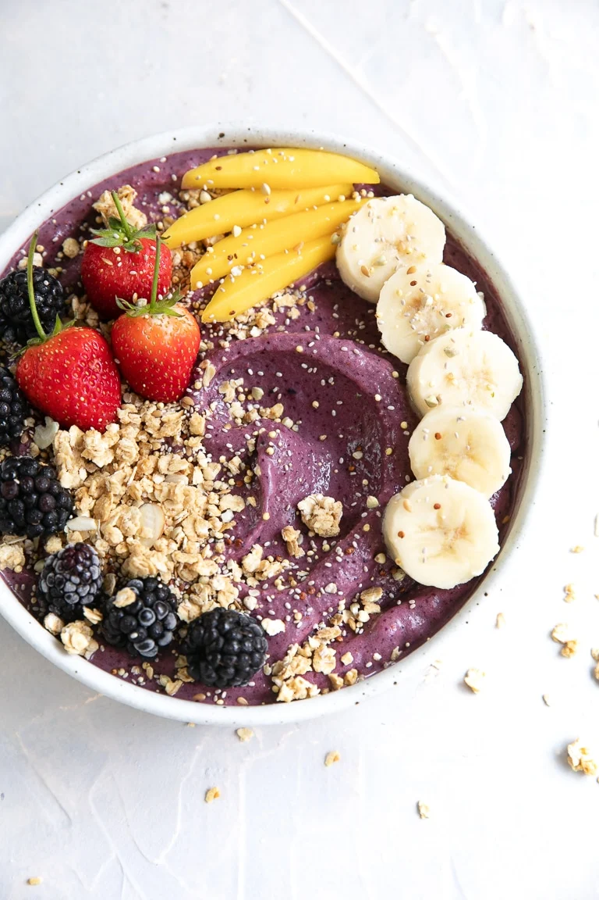

Acai Bowl Recipe

Original Acai Recipe
Description
A super quick and easy 5 minute recipe for an acai bowl.
Ingredients
- 1 banana - sliced and frozen
- ½ cup blueberries - frozen
- ½ cup strawberries - frozen
- ¾ cup milk or juice - use your favorite milk (dairy milk, soy, almond, etc) or juice (apple or grape)
- ½ cup plain yogurt - (substitute with milk or juice if desired)
- 200g (2 packets) frozen acai puree - broken into pieces
- assorted toppings - nuts, seeds, fresh fruit, granola, coconut, etc.
Steps
- Freeze your fruit. Slice your banana and transfer it to a small baking sheet or plate lined with parchment paper. To the same plate, add the blueberries and strawberries (store-bought frozen fruit will work just as well). Transfer tray or plate to the freezer and allow fruit to freeze completely.
- Blend. Once frozen, add the milk and yogurt to the bowl of a large, high-speed blender with a tamper (see notes). Add the frozen blueberries, strawberries, banana, and broken up acai. With the blender on low, use the tamper to push the frozen fruit down, mixing around as much as possible. Continue to blend on low until smooth, only adding additional liquid when needed.
- Assemble. Divide the smoothie into two bowls and top with all your favorite toppings. Popular additions include sliced banana, nuts, seeds, granola, and berries. Best enjoyed immediately.
Back